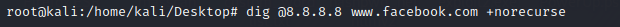
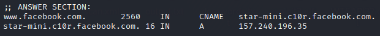
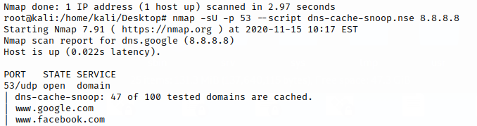

DNS Cache Snooping
DNS cache snooping is when someone queries a DNS server in order to
find out (snoop) if the DNS server has a specific DNS record cached, and thereby
deduce if the DNS server's owner (or its users) have recently visited a
specific site.
There are tow ways to do do a DNS Cache Snooping:
•
nonrecursive mode, queries are sent to the server with the RD (recursion desired) flag set to 0. The
server should respond positively to these only if it has the domain cached.
•
timed mode, the mean
and standard deviation response times for a cached domain are calculated by sampling the resolution of a name
(www.google.com) several times. Then, each domain is resolved and the time taken compared to the mean. If it is less
than one standard deviation over the mean, it is considered cached. The
timed mode inserts entries in
the cache and can only be used reliably once
Nonrecursive modeThe
nslookup command can be configured to create queries that do not request recursion using the
set
norecurse syntax, which sets the RD bit to zero.
This mean that the DNS server server NOT forward
that request to other DNS servers
Using this technique, we can harvest a bunch of information from DNS servers
to see which domain names users have recently accessed, possibly revealing some interesting and maybe even
embarrassing information.
It is an interesting technique when the clients have a badly configured DNS
server.
◇
Windows command line
for /F %i in (domains.txt) do @echo %i & nslookup -norecurse %i [nameserver] | find "answer" & echo. #check multiple domains
This command is built from a FOR /F loop, which iterates over the contents of the file domains.txt. In
that file, just put all of the names you want to check in the target DNS server's cache, with one name per line.
At each iteration through the loop, we turn off command echo (@), display the current name we are checking (echo %i)
and then we run nslookup with the -norecurse option.
◇
Linux shell
dig @[nameserver] [domain] +norecurse #check only a domain
 
for i in `cat domains.txt`; do host -r $i [nameserver]; done #check multiple domains
"-r" is how you turn off recursion with the host command. The "host" command is
silent if it doesn't retrieve any information, so we don't need to do any extra parsing to separate out the
negative responses like in the windows cmd.
In general, "host" is much more useful for scripting
kinds of applications than the "dig" command is
◇
nmap
nmap -sU -p 53 --script dns-cache-snoop.nse [nameserver] #check multiple domains
--script-args 'dns-cache-snoop.domains={host1,host2,host3}' → use a different list of domains
to resolve instead of the default list of domains to check that are the top 50 most popular sites, each one being
listed twice, once with "www." and once without
example:
against Google DNS at 8.8.8.8
 ◇
recon-ng We have to use the module cache_snoop of
recon-ng. To do that see
this
chapter Timed modeIt can be less accurate then
nonrecursive mode and take more time
◇
nmap
nmap -sU -p 53 --script dns-cache-snoop.nse --script-args 'dns-cache-snoop.mode=timed,dns-cache-snoop.domains={www.google.com,facebook.com,www.youtube.com}' [nameserver]
nmap -sU -p 53 --script dns-cache-snoop.nse --script-args 'dns-cache-snoop.mode=timed' [nameserver]
--script-args 'dns-cache-snoop.mode=timed' → timed mode instead of the default nonrecursive
mode
--script-args 'dns-cache-snoop.domains={host1,host2,host3}' → use a different list of domains to
resolve instead of the default list of domains to check that are the top 50 most popular sites, each one being
listed twice, once with "www." and once without
Dump cache from a DNS server
If we are on a system where the name server process is running, we can dump its cache to a local
file:
The cache is dumped to a file called "named_dump.db" in the current working directory of the
name server process.
But where is the current working directory of the name server process? Well you could
check the value of the "directory" option in named.conf, or just use the command lsof
The command line options here mean show the current working directory ("-d cwd") of the named
process ("-c named").
The "-a" means to "and" these two conditions together
rather than "or" them, which would be the normal default for lsof.
Bibliography:
• “Hands
on Hacking: Become an Expert at Next Gen Penetration Testing and Purple Teaming” Matthew Hickey, Jennifer
Arcuri
•
http://blog.commandlinekungfu.com/2009/03/episode-17-dns-cache-snooping-in-single.html•
https://support.simpledns.plus/kb/a125/what-is-dns-cache-snooping-and-how-do-i-prevent-it.aspx•
https://nmap.org/nsedoc/scripts/dns-cache-snoop.html